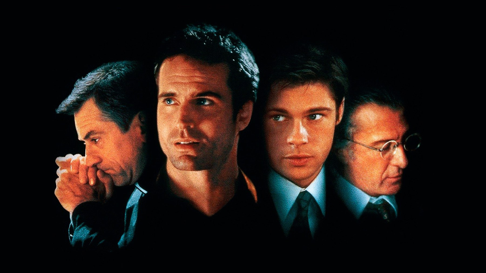

Sleepers compie 30 anni: 6 curiosità sul film di Levinson
Una storia vera che il suo stesso autore ha poi ridimensionato, un cast con Brad Pitt, De Niro e Hoffman, un riformatorio girato in Connecticut e un'unica candidatura all'Oscar: Sleepers visto da dietro le quinte
Il film comincia con una dichiarazione: quella che state per vedere è una storia vera sull'amicizia. Trent'anni dopo, nel giorno in cui Sleepers compie il suo anniversario di uscita italiana, è la frase più discussa dell'intero film. Costò 44 milioni di dollari, ne incassò circa 165 in tutto il mondo e mise nella stessa inquadratura Robert De Niro, Dustin Hoffman, Brad Pitt e Kevin Bacon. Ma la cosa più interessante non è chi c'è: è quanto di ciò che si vede sia successo davvero. Ecco sei cose da sapere prima di rivederlo, senza rovinare nulla della storia.
Quanto c'è di vero nella storia di Sleepers?
Meno di quanto dica la didascalia iniziale. Il film è tratto dal romanzo di Lorenzo Carcaterra, che lo presentò come autobiografico: quattro ragazzi di Hell's Kitchen, a Manhattan, finiti nel riformatorio Wilkinson nel 1967 e rovinati dalle violenze delle guardie. All'uscita, però, l'amministrazione carceraria minorile e la procura di Manhattan negarono i fatti descritti. Carcaterra riconobbe che gran parte dei dettagli del libro era inventata, ma continuò a sostenere che la sostanza fosse reale e di aver cambiato soltanto nomi, date e luoghi. Il punto, per chi guarda oggi, è semplice: Sleepers funziona benissimo come film, e va preso come un racconto ispirato a una testimonianza, non come un atto giudiziario.
Quando è uscito in Italia e chi lo ha distribuito?
Il percorso fu a tappe. Il film fu presentato fuori concorso alla Mostra del cinema di Venezia il 28 agosto 1996, arrivò nelle sale americane il 18 ottobre e in quelle italiane il 25 ottobre dello stesso anno, distribuito da Italian International Film. Questa curiosità è meno futile di quanto sembri: Venezia fu la vetrina europea di un film che puntava dichiaratamente sul prestigio del cast, e la settimana di distanza tra Stati Uniti e Italia era, per quegli anni, un'uscita quasi in contemporanea.
Dove è stato girato il riformatorio?
Le riprese durarono dal 29 agosto al 30 novembre 1995 e si concentrarono a New York, perché la storia doveva respirare l'aria del quartiere. Le scene del riformatorio, invece, furono girate a Newtown, nel Connecticut. È una scelta che si sente: gli interni dell'istituto hanno un peso freddo e opprimente che contrasta con la luce calda delle strade di Hell's Kitchen nella prima parte, quella dell'infanzia e dei giochi per strada.
Chi sono i volti che si ricordano?
Brad Pitt interpreta Michael Sullivan da adulto, Jason Patric è Lorenzo «Shakes» Carcaterra, il personaggio che porta il nome dell'autore, Kevin Bacon è la guardia Sean Nokes, Robert De Niro è padre Bobby Carillo e Dustin Hoffman l'avvocato Danny Snyder. Nel cast c'è anche Bruno Kirby, nel ruolo del padre di Shakes. Un dettaglio che spesso si dimentica: Minnie Driver, che interpreta Carol Martinez, ricevette nel 1998 il premio come miglior attrice britannica non protagonista ai London Critics Circle Film Awards.

Che cosa ha preso il film agli Oscar?
Una sola candidatura, ed è la più sorprendente per chi guarda il cast: la miglior colonna sonora originale, per John Williams. Nessun premio ai quattro grandi attori protagonisti, quindi. Williams scrisse per un film di tribunale e di infanzia una musica drammatica che regge la lunga durata, 147 minuti, senza mai appesantirla. Alla cerimonia del 1997 la candidatura fu l'unico riconoscimento dell'Academy per il film.
Come è stato accolto e vale la pena rivederlo?
I critici lodarono le interpretazioni e gli diedero ragione sul tema, ma notarono che nella seconda metà il film perde un po' di fuoco. Oggi su Rotten Tomatoes ha il 76% di giudizi positivi e il pubblico americano gli aveva dato una A- nei sondaggi di uscita. Il nostro parere è netto: la prima ora, quella dei quattro ragazzi per strada, è la parte migliore, e vale da sola la visione. Lo consigliamo a chi ama i film di amicizia e di processi con cast enorme, e a chi si fida del tono sobrio di Levinson. Va avvisato chi è sensibile: racconta violenze su ragazzini, anche se le tiene fuori campo. A ottobre 2026 si vede in abbonamento su Netflix, oppure a noleggio su Apple TV, Amazon Video e CHILI.
Domande frequenti
Quando è uscito Sleepers in Italia?
Il 25 ottobre 1996. Negli Stati Uniti era uscito il 18 ottobre 1996, dopo la presentazione fuori concorso alla Mostra di Venezia il 28 agosto.
Sleepers è tratto da una storia vera?
È tratto dal romanzo di Lorenzo Carcaterra, presentato come autobiografico. La procura di Manhattan e l'amministrazione carceraria minorile negarono i fatti, e lo stesso Carcaterra ammise che gran parte dei dettagli era inventata.
Dove vedere Sleepers in streaming?
A ottobre 2026 in abbonamento su Netflix; a noleggio su Apple TV, Amazon Video e CHILI. La disponibilità può cambiare.